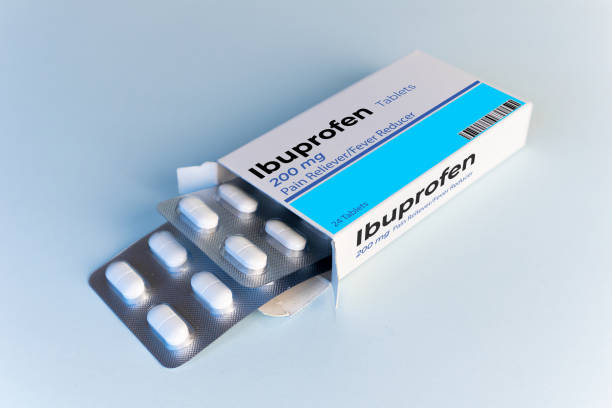
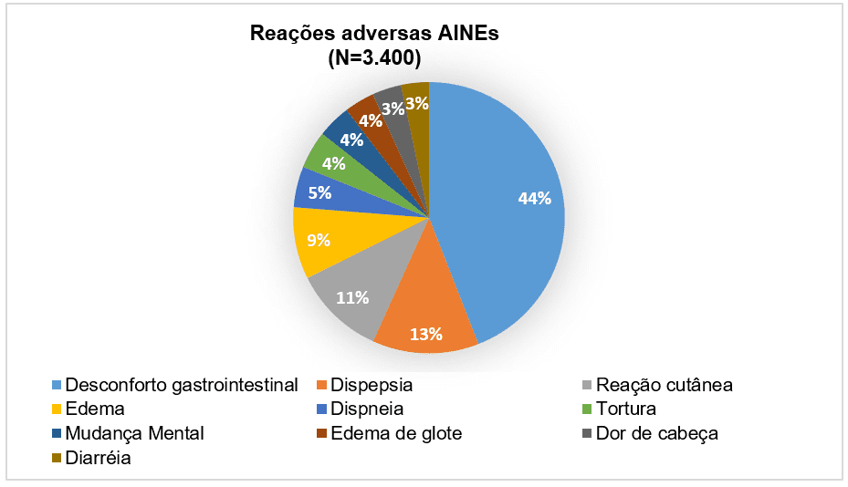

O que é o Ibuprofeno e para que serve?
O ibuprofeno é um medicamento da classe dos anti-inflamatórios não esteroides (AINEs), com ação analgésica (para dor), antipirética (para febre) e anti-inflamatória. É amplamente usado em todo o mundo para tratar:
- Dores leves a moderadas (dor de cabeça, dor muscular, dor de dente, dor menstrual, dor articular).
- Processos inflamatórios (artrite, tendinite, inflamações diversas).
- Febre em adultos e crianças.
Resumo: O ibuprofeno é eficaz para dor, febre e inflamação, mas deve ser usado com cautela em pessoas com problemas gástricos, renais ou cardiovasculares.
Ibuprofeno – Química ogânica
Fórmula molecular: C₁₃H₁₈O₂
O ibuprofeno pertence à classe dos anti-inflamatórios não esteroides (AINEs). Ele apresenta um anel aromático (benzeno) e dois grupos funcionais importantes:
- Ácido carboxílico (-COOH): responsável pela acidez e pela atividade anti-inflamatória.
- Substituintes alquila: cadeias laterais de carbono que influenciam sua solubilidade e estabilidade.
Grupos funcionais
- Aromático (anel benzênico): dá estabilidade e características lipofílicas (se dissolve em gordura).
- Ácido carboxílico (-COOH): grupo funcional mais importante; garante solubilidade parcial em água e interação com proteínas do corpo.
Características da molécula
- Cadeia carbônica: fechada (aromática) com ramificações.
- Polaridade: tem parte polar (-COOH) e parte apolar (anel aromático e cadeias carbônicas).
- Forças intermoleculares: ligações de hidrogênio (pelo -COOH) e forças de van der Waals (entre partes apolares).
- Solubilidade: pouco solúvel em água, mas bem solúvel em solventes orgânicos (álcool, éter).
Vantagens
- Eficaz contra dor, febre e inflamação.
- Disponível em várias formas: comprimidos, gotas, suspensão oral.
- É um dos AINEs mais estudados e com eficácia bem estabelecida.
- Disponível sem receita em doses baixas, facilitando o acesso.
Desvantagens e riscos
- Irritação gástrica: risco de gastrite, úlceras e sangramentos.
- Risco cardiovascular: pode aumentar risco de hipertensão, infarto ou AVC em uso prolongado.
- Risco renal: pode prejudicar função dos rins, especialmente em idosos e desidratados.
- Não deve ser usado no terceiro trimestre da gravidez.
Atenção: Evite uso contínuo sem orientação médica. Pessoas com histórico de úlceras, problemas cardíacos ou renais devem usar apenas com supervisão profissional.
Efeitos colaterais
Nem todas as pessoas apresentam efeitos colaterais, mas os mais relatados são:
- Comuns: dor de estômago, azia, náusea, tontura.
- Menos comuns: retenção de líquidos, inchaço, aumento da pressão arterial.
- Raros/graves: úlcera gástrica, hemorragia digestiva, insuficiência renal, reações alérgicas graves (anafilaxia), problemas hepáticos.
Procure atendimento médico se houver dor abdominal intensa, vômitos com sangue, fezes escuras, falta de ar, inchaço súbito, reação alérgica ou amarelamento da pele/olhos.
Uso responsável
- Use sempre na menor dose eficaz pelo menor tempo possível.
- Evite uso concomitante com álcool ou outros AINEs.
- Não combine com anticoagulantes sem orientação médica.
- Gestantes, idosos e pessoas com doenças crônicas devem consultar um médico antes do uso.